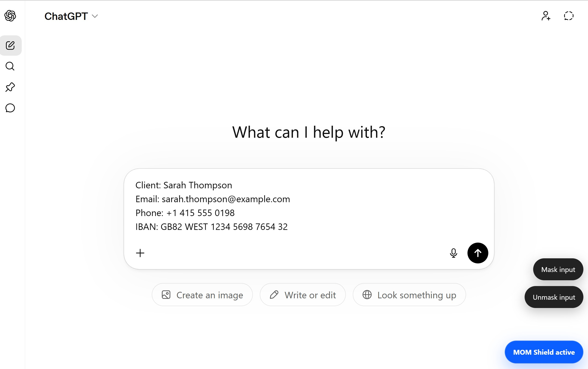
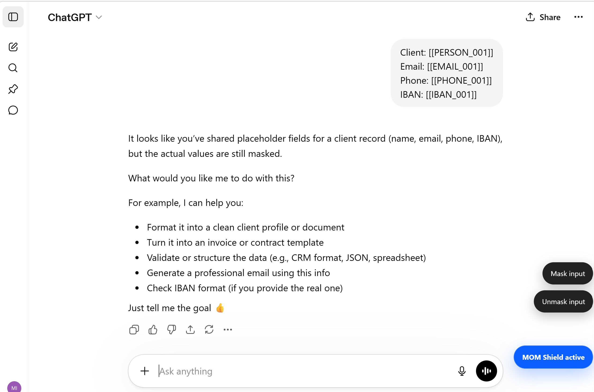
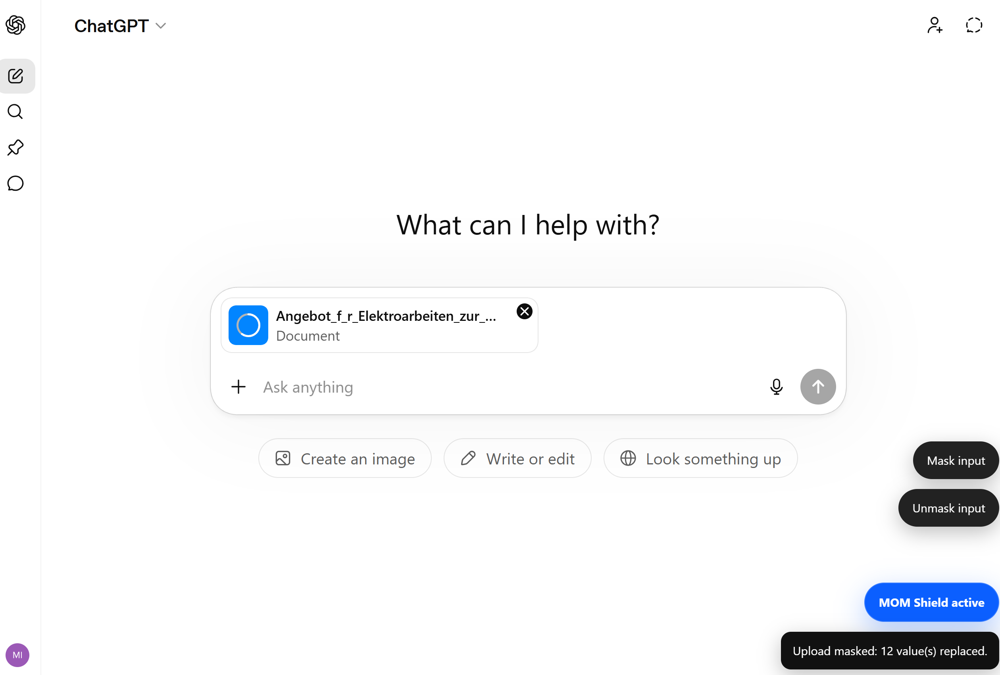
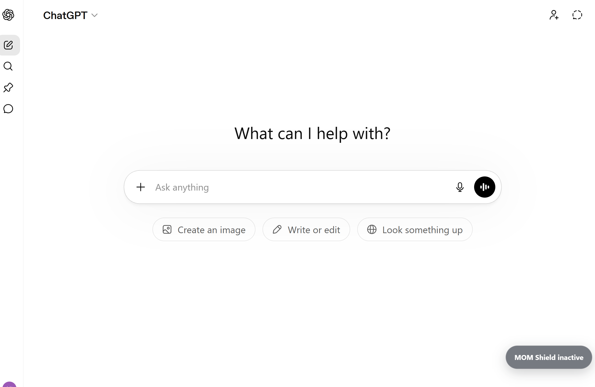

01
Watches before you send
Prompt masking runs before submission, so sensitive values are caught before they leave your browser.
Protective instinct for AI work
MOM Shield is built for the moment people move too fast. It watches over prompts and file uploads, masks sensitive data before it leaves your browser, intercepts accidental sends, and can restore readable replies on your device so the workflow still feels natural.
Before send
Real client data is still in the prompt.
Intercept
The point is not perfect behavior. The point is catching the rushed send, the pasted customer record, and the upload that should have been scrubbed first.
What AI receives
Structured placeholders instead of exposure.
One accidental click is enough. MOM Shield is designed for that exact moment.
Why MOM
MOM Shield is named for a simple idea: the best protection is the one that notices when something sensitive is about to go out the door and quietly stops it first. It does not ask people to work like machines. It protects the way people actually use AI.
01
Prompt masking runs before submission, so sensitive values are caught before they leave your browser.
02
If you hit Send too fast, MOM Shield still intercepts the prompt first instead of letting raw data slip through.
03
Masked placeholders can be restored on your device so the response stays useful instead of turning into a token wall.
04
Supported uploads are masked first, then sent, so documents get the same protection as prompts.
Proof
On the left, the original prompt still contains personal data. On the right, MOM Shield has already converted it into safe placeholders before the AI sees it.


MOM Shield protects the moment users paste too much or click too quickly.
The AI still gets enough structure to do the job while the sensitive values stay out.
The protection sits in the workflow instead of asking users to stop and manually sanitize every time.
Workflow coverage
01
Client notes, identifiers, contact records, internal context, and copied snippets are handled in place.
02
Before the prompt leaves the browser, MOM Shield swaps sensitive values for placeholders.
03
When local history is available, placeholders can be restored on your device so the answer stays readable.
04
Supported files are processed before upload, so document protection happens before the AI service receives them.
Operational details
MOM Shield shows what is happening at the exact moments that matter: when a file is being protected before upload and when protection is turned off.
Upload protection
Supported uploads are processed locally first, then handed off, so sensitive values are not sent in raw form by mistake.

Control state
Users can clearly see when MOM Shield is active or inactive, which makes the product feel trustworthy instead of opaque.

Demo
The demo shows the exact behavior that makes MOM Shield different: sensitive data is caught before submission, uploads are protected before transfer, and the workflow stays readable instead of turning into manual cleanup.
Availability
MOM Shield is currently available free of charge. Optional paid features may be introduced later. The current version performs masking locally in the browser and does not use a provider-operated masking backend.